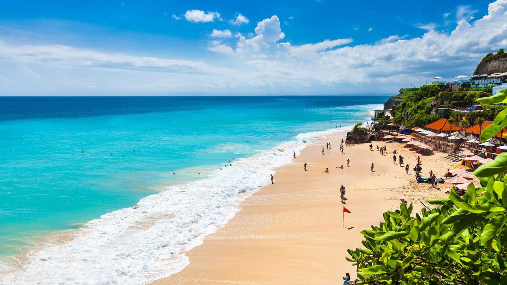
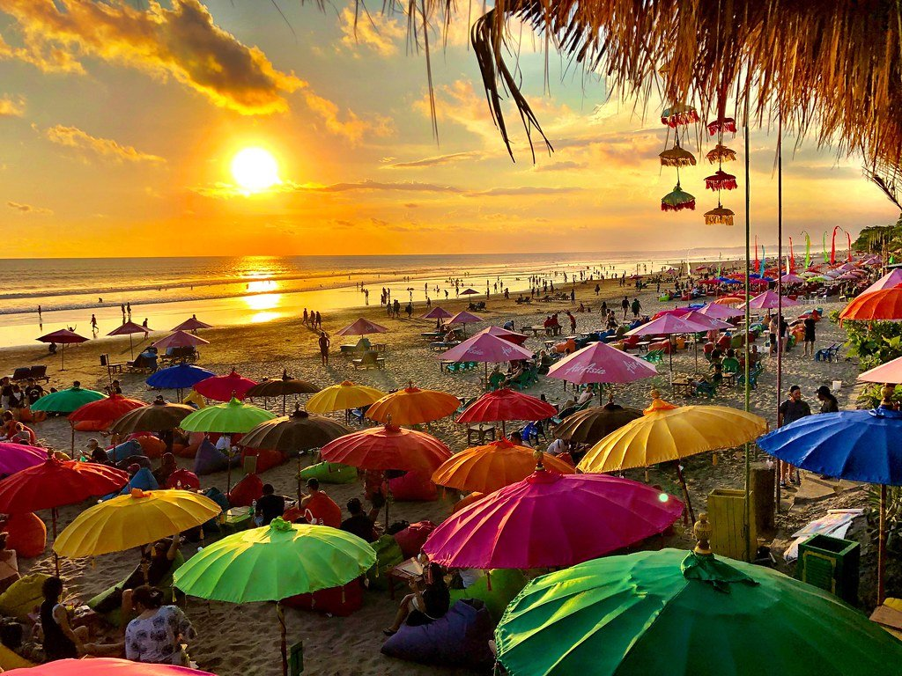
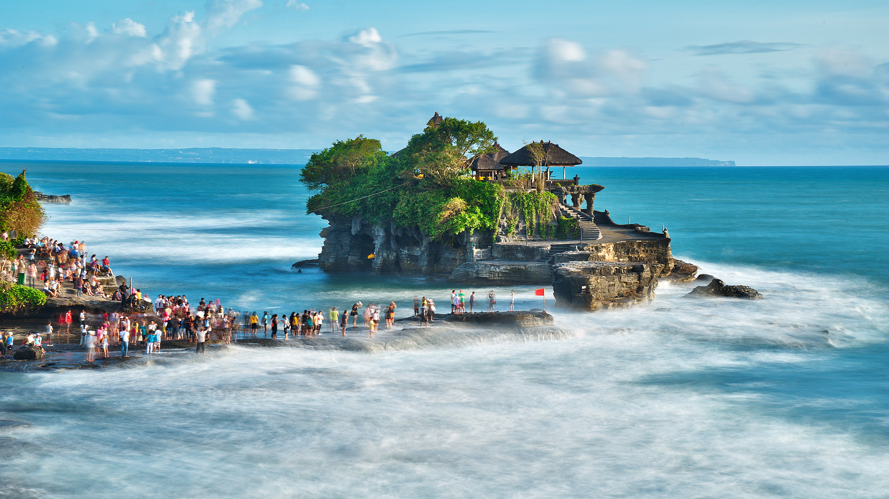

Bali Map
Bali is a province of Indonesia and the westernmost of the Lesser Sunda Islands. East of Java and west of Lombok, the province includes the island of Bali and a few smaller neighbouring islands, notably Nusa Penida, Nusa Lembongan, and Nusa Ceningan. The provincial capital, Denpasar, is the most populous city in the Lesser Sunda Islands and the second-largest, after Makassar, in Eastern Indonesia. The upland town of Ubud in Greater Denpasar is considered Bali's cultural centre. The province is Indonesia's main tourist destination, with a significant rise in tourism since the 1980s. Tourism-related business makes up 80% of its economy.
Bali is part of the Coral Triangle, the area with the highest biodiversity of marine species, especially fish and turtles. In this area alone, over 500 reef-building coral species can be found. For comparison, this is about seven times as many as in the entire Caribbean. Bali is the home of the Subak irrigation system, a UNESCO World Heritage Site.
Getting Around Bali
Bike
For short distances, bikes are a cheap, fun way to easily explore outside of your hotel. Bikes can also be a faster option in traffic congested towns. You can rent bikes through many of the resorts and small shops in tourist towns, such as Kuta. Rental prices vary by company and bike type, but can cost between 60,000 rupiahs (less than $5) to 350,000 rupiahs (around $24) per day. Bali Bike Rental, Bali Rides and Bali Eco Cycling receive favorable reviews from past visitors. Due to the unstable nature of some of Bali's roads, you'll want to avoid biking in congested areas like Denpasar and Kuta.
Hired Car and Driver
This mode of transportation may seem like an extravagant route, but you'll find that this option can be cost-effective and worth every penny. You can usually arrange a car and driver through your hotel; however, there are numerous agencies, like Bali Island Car Rental, that offer the service. Expect to negotiate a price (unless it has been prearranged) and to pay for the driver's food, drink and accommodations if you've hired him for a multiday trip. A day's hire should cost about $50. For the price, you'll have a worry-free means of getting around and potentially a local tour guide. For more information, consult your hotel's concierge your hotel may offer a similar service (for a fee).
Rental Car
Renting a car is easy and affordable, but driving around Bali is difficult with its traffic, its drivers and unclear signage. By law, you are required to have an international driver's permit or a locally issued one. Rental agencies, such as Hertz, Sixt, Avis and Budget, are located in many resort towns and at Ngurah Rai International Airport.
Taxi
Travelers have had a mixed bag of fortunes with taxis. Drivers can be unreliable and some can try to be sneaky. Luckily, most are fair and friendly to tourists. Some taxis run on negotiated prices while others go according to a meter. Fares typically start at around 5,000 to 7,000 Indonesian rupiahs (about $0.50), with each additional kilometer costing 4,000 rupiahs (about $0.25). You can hail cabs from the street in larger towns like Denpasar, or you can call for one. Blue Bird Group is one the most reliable taxi operators, according to travelers. The company even offers a smartphone app to finding an available cab easy.
Whether you're riding with Blue Bird Group or any of the island's other companies, you'll want to keep a few safety precautions in mind. Always make sure the driver turns on their meter so you're charged the proper fare and take a look at a map to make sure your driver isn't taking the long route.
Bus
Public and private tour buses are an affordable way to explore the island. That said, they don't allow the freedom to explore off the beaten path and can take a very long time to reach their destinations. Bali's most popular private bus tours are organized by Perama Tour & Travel.
Bali's public buses go between major towns but routes, costs and departure and arrival times can be hard to track down. Reviews have been favorable for the newer Kura-Kura public shuttle bus, which operates five lines around Bali's major tourist hubs, including Kuta, Seminyak and Ubud. Buses are equipped with free Wi-Fi, air conditioning, audio-visual announcement systems and luggage racks, though they do not run very frequently; some routes depart every two hours. Fixed fares range between 20,000 and 80,000 rupiah (about $1.50 to $5.50) for single journeys. Look for green and yellow buses with cartoon turtles painted on them.
Boat
Travelers occasionally use boats and ferries to reach Bali's neighboring islands. This option is not only scenic, but also affordable. While public ferries can be cheaper, commercial boat services offer speedy and direct transport to the surrounding islands. Still, travelers should note that many of the boat operators may have little to no training and that safety regulations are nonexistent. Keep in mind that bigger boats are generally more safe, and travelers should also check for safety equipment before boarding boats.
Tourist Attraction
Bali is one of the most evocative and popular tourist islands of the entire Indonesian archipelago. A visit here sparks the senses. The intoxicating fragrance of incense and clove oil hangs in the thick tropical air. Peanuts sizzle at roadside stalls, petal-strewn offerings smolder on busy sidewalks, and traditional gamelan music jangles against the buzz of mopeds.
Despite the clamor and chaos of the main tourist areas, the island is rich in natural beauty, with attractions for every kind of traveler. Surfers come for the legendary swells, hikers can trek up jungly volcanic peaks to misty waterfalls, and cyclists can bike through lush landscapes bristling with rice terraces and traditional villages.
The island's rich arts scene is another top draw, and if relaxation is your top priority, the shopping in Bali and spa treatments are fabulous and affordable. Spirituality adds yet another layer to Bali's allure, and seeing the magnificent temples and sacred Hindu ceremonies are top things to do in Bali.
Pantai Kuta

The beach has been notable since the early 1970s. Kuta beach is also known as Sunset Beach, as opposed to the Sunrise Beach, another name for Sanur Beach. Luxury resorts, restaurants, and clubs are located along the beach.
In 2011, a two-meter white sandstone fence, built in a Balinese architecture style, was built along the road to block the sand from blowing to the cafes and restaurants. The project cost Rp.4 billion ($0.47 million). Some tourists dislike it as it is considered to be blocking the beach view, while others believe the wall helps dampen the sounds from the congested traffic on the adjacent street. To make the beach cleaner, as of late August 2011, vendors are prohibited from selling food on the beach, but they are still allowed to sell beverages and souvenirs.
Seminyak

Seminyak is a mixed tourist residential area on the west coast of Bali in Indonesia, just north of Kuta and Legian.
Originally a separate township, this is now another suburb of Kuta. This area is very popular with resident expatriates; land and accommodation prices are amongst the highest in Bali. Plenty of luxury spas and hotels abound. Owing to its high density of high-end shopping, combined with the clustering of many fine eating establishments, it has rapidly become one of the most well-known tourist areas on the island.
In addition to a few commercial strips with popular and lively restaurants, bars, villas, and good crafts/furniture shops, there are a few notable establishments: Ku Dé Ta, which is a bar/restaurant with a cult following based on its beach side/semi-resort atmosphere that has earned it the title of number one party spot in various magazines, and Oberoi, which is an expensive hotel with a worldwide reputation. Jalan Raya Seminyak (more often referred to as Jalan Legian), runs parallel with the beach, bisecting the district and acts as its main road artery.
Pura Tanah Lot

Tanah Lot means "Land [in the] Sea" in the Balinese language. Located in Tabanan, about 20 kilometres (12 mi) North West of Denpasar, the temple sits on a large offshore rock which has been shaped continuously over the years by the ocean tide.
Tanah Lot is claimed to be the work of the 16th-century Dang Hyang Nirartha. During his travels along the south coast he saw the rock-island's beautiful setting and decided to rest there. Some fishermen saw him, and bought him gifts. Nirartha then spent the night on the little island. Later he spoke to the fishermen and told them to build a shrine on the rock, for he felt it to be a holy place to worship the Balinese sea gods. The main deity of the temple is Dewa Baruna or Bhatara Segara, who is the sea god or sea power and these days, Nirartha is also worshipped here.
The Tanah Lot temple was built and has been a part of Balinese mythology for centuries. The temple is one of seven sea temples around the Balinese coast. Each of the sea temples was established within eyesight of the next to form a chain along the south-western coast. In addition to Balinese mythology, the temple was significantly influenced by Hinduism.
At the base of the rocky island, venomous sea snakes are believed to guard the temple from evil spirits and intruders. The temple is purportedly protected by a giant snake, which was created from Nirartha's selendang (a type of sash) when he established the island.
Balinese Cuisine
Balinese cuisine is a cuisine tradition of Balinese people from the volcanic island of Bali. Using a variety of spices, blended with the fresh vegetables, meat and fish. Part of Indonesian cuisine, it demonstrates indigenous traditions, as well as influences from other Indonesian regional cuisine, Chinese and Indian. The island's inhabitants are predominantly Hindu and culinary traditions are somewhat distinct with the rest of Indonesia, with festivals and religious celebrations including many special foods prepared as the offerings for the deities, as well as other dishes consumed communally during the celebrations.
Rice, the primary grain is almost always consumed as a staple accompanied with vegetables, meat and seafood. Pork, chicken, fruit, vegetables and seafood are widely utilized, however just like most Hindus, beef is never or rarely consumed.
Bali is a popular tourist destination, and the area has many cooking schools with daily courses of Balinese cuisine. Night markets, warungs (food stands), and fruit vendors sell local delicacies. Festivals include ornately prepared foods as part of the celebrations. As a popular tourist area, many westernized foods are also available as well.
Ayam Betutu

Betutu is the slow-cooked equivalent of Bali's babi guling (roast suckling pig). Suitable for those who don't eat pork, this iconic Balinese dish consists of a whole chicken (ayam) or duck (bebek) stuffed with traditional spices, wrapped in banana leaves, then enveloped tight in the bark of a banana trunk. The entire thing is baked or buried in a coal fire for 6 to 7 hours, resulting in a rich and juicy meat that easily separates from the bones.
Babi Guling

Babi guling is an all-time favourite, consisting of spit-roast pig stuffed with rich traditional spices and vegetable mixes such as cassava leaves, slowly rolled over (guling means "to roll" in Indonesian) a coal fire.
The crisp brown skins are prized, while the meat is a tender and juicy treat. At first, babi guling was a communal treat during special festivities and ceremonies, but you can find it at many warungs (food stalls) and restaurants that specialise in this dish.
Lawar
Lawar is a mix of finely chopped meat, vegetables, grated coconut and spices. In some areas of Bali, this traditional dish is prepared by mixing fresh animal blood with meat and spices to strengthen the flavour. The dish is usually served immediately after preparation as it cannot be kept long. There are 2 main types of lawar white and red. The white version appeals to vegans and vegetarians as it doesn't contain meat or blood.